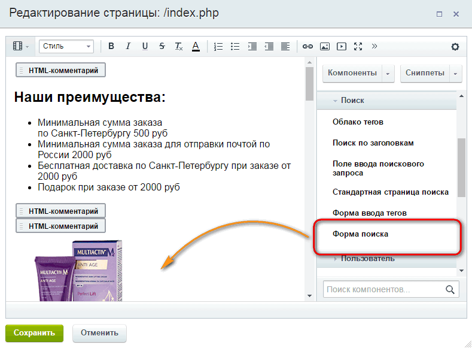
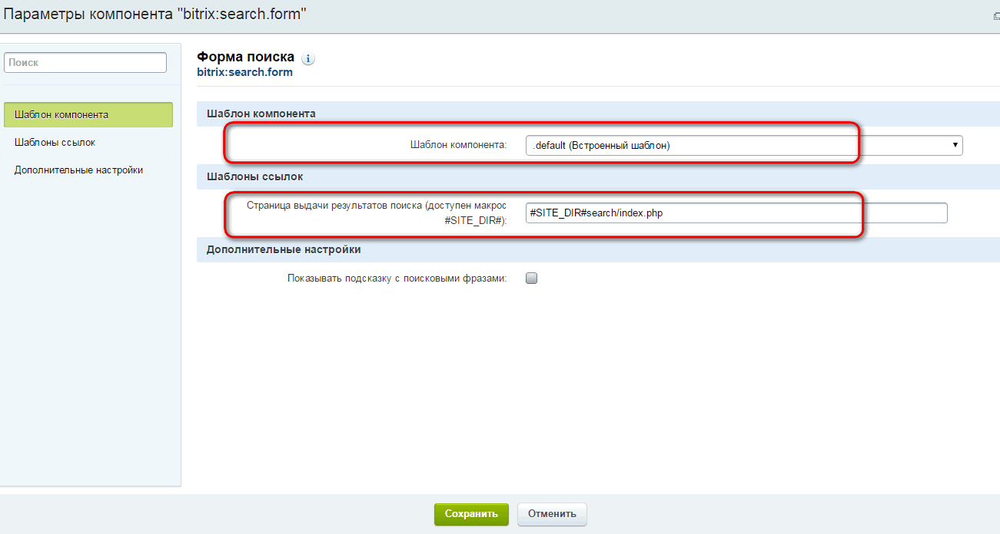
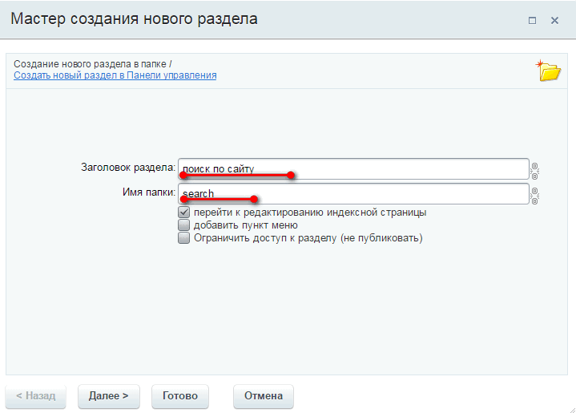
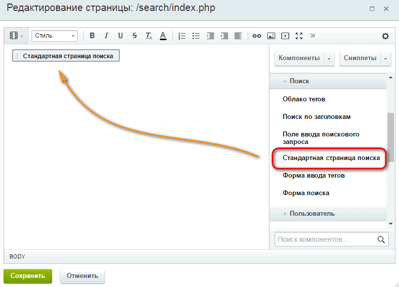
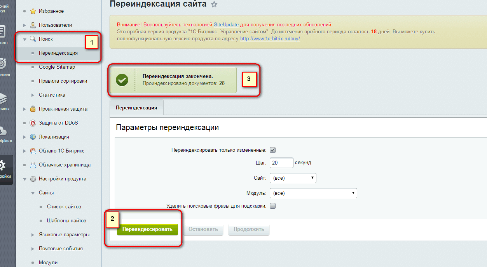

CMS Bitrix --- реализация поиска на сайте
Определяем место установки в коде HTML формы поиска и устанавливаем компонент "служебные - поиск - Форма поиска" по месту
Настройки компонента "формы поиска"
Cоздаем страничку-раздел куда будет выводится результат поиска
Добавляем на страницу компонент "поиск - стандартная страница поиска"
После установки компонента можно проиндексировать проект для активациии поиска на сайте
